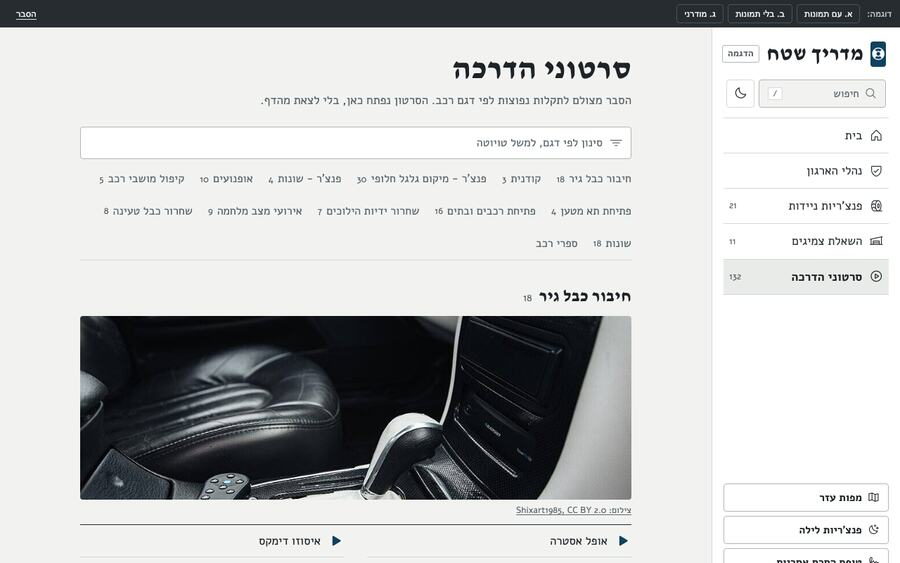
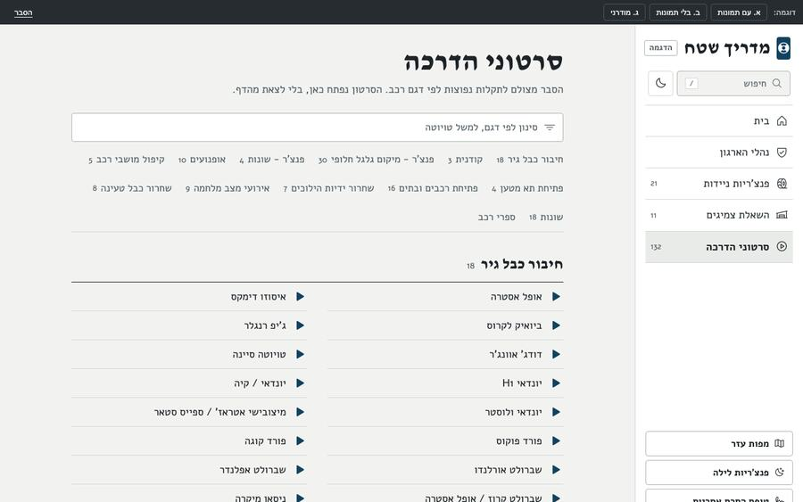
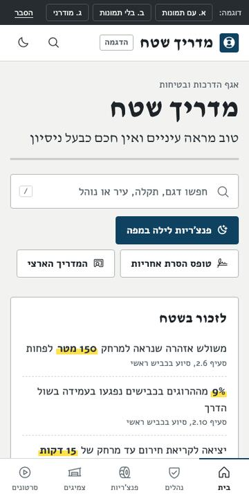
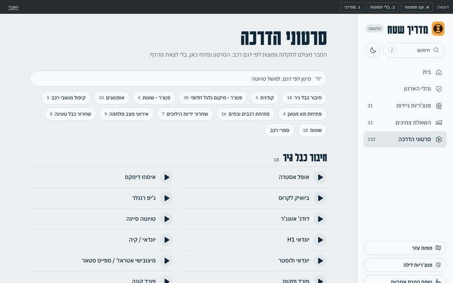
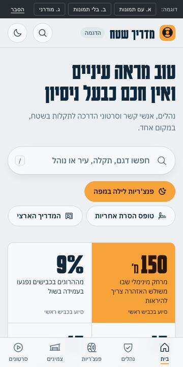

גרסת הדגמה
מדריך שטח: שלוש דוגמאות עיצוב
אותו תוכן ואותן פעולות בשלושה סגנונות. אפשר לעבור בין הסגנונות בכל רגע מהפס שבראש הדף, ולהישאר באותו מסך.
א.חוברת שטח עם תמונות
בסגנון חוברת נהלים מודפסת, עם תמונות להמחשה בנהלים ובקטגוריות הסרטונים.
- כותרות בגופן של מסמך רשמי
- סעיפים ממוספרים, איסורים באדום
- תמונה לכל נוהל ולכל קטגוריה


ב.חוברת שטח בלי תמונות
אותה חוברת, נקייה מתמונות. טקסט ורשימות בלבד, נטען מהר גם בקליטה חלשה.
- אותה טיפוגרפיה ואותם צבעים
- פחות גלילה, יותר מידע במסך


ג.מודרני
סגנון אפליקציה: כותרות גדולות בגופן צר, כפתורים מעוגלים ומבטא כתום.
- מספרי בטיחות גדולים בדף הבית
- מראה של אפליקציה ולא של מסמך


כל הדוגמאות הן גרסת הדגמה: שמות העסקים, אנשי הקשר ומספרי הטלפון הם לדוגמה בלבד. תמונות ההמחשה מ-Wikimedia Commons, עם קרדיט לצלם מתחת לכל תמונה.